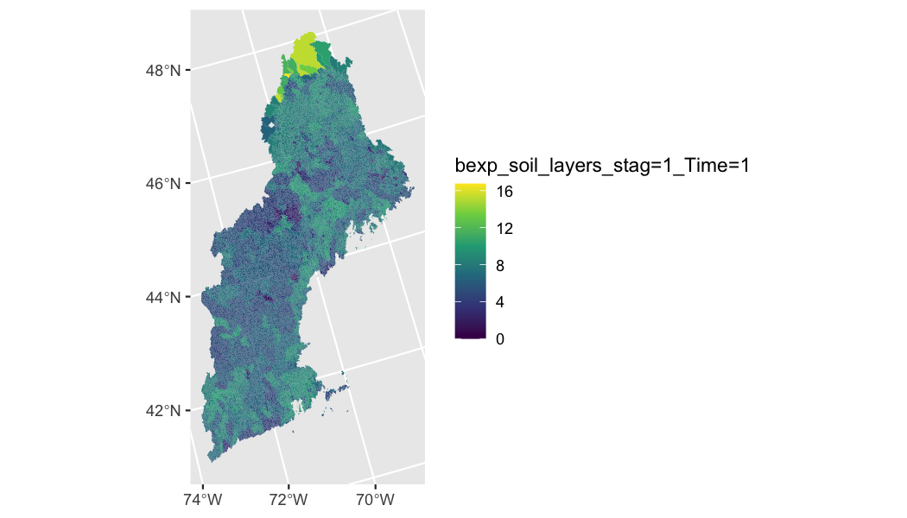

The purpose here is to demonstrate a real world application of zonal to summarize the NWM channel routing parmaters to a in-development hydrofabric.
Define Aggregations Geometries and Geogrid
Here we are using a version of the ngen hydrofabric:
geom <- read_sf('hydrofabric.gpkg', "catchments")
paint(geom)## sf [18041, 4]
## active geometry column: geom (POLYGON)
## crs: 5070 (NAD83 / Conus Albers)
## crs unit: metre
## ID chr cat-1 cat-2 cat-4 cat-5 cat-6 cat-7
## area_sqkm dbl 12.457576 267.083595 8.319214 9.278138 60.577~
## toID chr nex-2 nex-3 nex-5 nex-6 nex-7 nex-8
## geom sfc POLY 2,024B POLY 9,064B POLY 1,656B POLY 1,81~And the soilproperties_CONUS_FullRouting file from NWM v2.16. Can download from here
(f = rast('soilproperties_CONUS_FullRouting.nc'))## [1] "vobjtovarid4: **** WARNING **** I was asked to get a varid for dimension named west_east BUT this dimension HAS NO DIMVAR! Code will probably fail at this point"
## [1] "vobjtovarid4: **** WARNING **** I was asked to get a varid for dimension named south_north BUT this dimension HAS NO DIMVAR! Code will probably fail at this point"## class : SpatRaster
## dimensions : 3840, 4608, 45 (nrow, ncol, nlyr)
## resolution : 1, 1 (x, y)
## extent : 0.5, 4608, 0.5, 3840 (xmin, xmax, ymin, ymax)
## coord. ref. : +proj=longlat +datum=WGS84 +no_defs
## sources : soilproperties_CONUS_FullRouting.nc:bexp (4 layers)
## soilproperties_CONUS_FullRouting.nc:cwpvt
## soilproperties_CONUS_FullRouting.nc:dksat (4 layers)
## ... and 15 more source(s)
## varnames : bexp
## cwpvt
## dksat
## ...
## names : bexp_~ime=1, bexp_~ime=1, bexp_~ime=1, bexp_~ime=1, cwpvt_Time=1, dksat~ime=1, ...Note that when the layered attributes are separated, there are 45 raster layers. Also note that the spatial metadata for the NWM file is out of wack (see the resolution, extent, and CRS). We will fix this using some functionality from wrfhydroSubsetter to identify the layer structure.
library(wrfhydroSubsetter)
e = make_empty_geogrid_raster('/Volumes/Transcend/nwmCONUS-v216/geo_em_CONUS.nc')
ext(f) = ext(e)
crs(f) = crs(e)
f## class : SpatRaster
## dimensions : 3840, 4608, 45 (nrow, ncol, nlyr)
## resolution : 1000, 1000 (x, y)
## extent : -2304000, 2304000, -1920001, 1919999 (xmin, xmax, ymin, ymax)
## coord. ref. : +proj=lcc +lat_0=40.0000076293945 +lon_0=-97 +lat_1=30 +lat_2=60 +x_0=0 +y_0=0 +R=6370000 +units=m +no_defs
## sources : soilproperties_CONUS_FullRouting.nc:bexp (4 layers)
## soilproperties_CONUS_FullRouting.nc:cwpvt
## soilproperties_CONUS_FullRouting.nc:dksat (4 layers)
## ... and 15 more source(s)
## varnames : bexp
## cwpvt
## dksat
## ...
## names : bexp_~ime=1, bexp_~ime=1, bexp_~ime=1, bexp_~ime=1, cwpvt_Time=1, dksat~ime=1, ...Build Weight Grid
w_time = system.time({
zonal_w = weighting_grid(file = f, geom = geom, ID = "ID")
})
paint(zonal_w)## data.table [330755, 5]
## keys: grid_id
## ID chr cat-72 cat-72 cat-72 cat-72 cat-72 cat-72
## Y dbl 689 689 689 689 689 689
## X dbl 4310 4311 4312 4313 4314 4315
## grid_id dbl 175 176 177 178 179 180
## w dbl 0.407517 0.360609 0.203826 0.096122 0.22353 0.0~Execute Intersection
z_time = system.time({
out = zonal::execute_zonal(f, w = zonal_w)
})
names(out) = c('ID', names(f))
paint(out)## data.table [18041, 46]
## keys: ID
## ID chr cat-1 cat-10 cat-100 c~
## bexp_soil_layers_stag=1_Time=1 dbl 8.282019 8.3008 4.4022~
## bexp_soil_layers_stag=2_Time=1 dbl 8.282019 8.3008 4.4022~
## bexp_soil_layers_stag=3_Time=1 dbl 8.282019 8.3008 4.4022~
## bexp_soil_layers_stag=4_Time=1 dbl 8.282019 8.3008 4.4022~
## cwpvt_Time=1 dbl 0.358165 0.358331 0.35~
## dksat_soil_layers_stag=1_Time=1 dbl 0.000004 0.000004 0.00~
## dksat_soil_layers_stag=2_Time=1 dbl 0.000004 0.000004 0.00~
## dksat_soil_layers_stag=3_Time=1 dbl 0.000004 0.000004 0.00~
## dksat_soil_layers_stag=4_Time=1 dbl 0.000004 0.000004 0.00~
## dwsat_soil_layers_stag=1_Time=1 dbl 0.000023 0.000024 0.00~
## dwsat_soil_layers_stag=2_Time=1 dbl 0.000023 0.000024 0.00~
## dwsat_soil_layers_stag=3_Time=1 dbl 0.000023 0.000024 0.00~
## dwsat_soil_layers_stag=4_Time=1 dbl 0.000023 0.000024 0.00~
## hvt_Time=1 dbl 16 19.315861 9.692179 ~
## mfsno_Time=1 dbl 3.642424 3.735388 1.16~
## mp_Time=1 dbl 12.393361 8.971084 9.9~
## psisat_soil_layers_stag=1_Time=1 dbl 0.716336 0.759 0.18949~
## psisat_soil_layers_stag=2_Time=1 dbl 0.716336 0.759 0.18949~
## psisat_soil_layers_stag=3_Time=1 dbl 0.716336 0.759 0.18949~
## psisat_soil_layers_stag=4_Time=1 dbl 0.716336 0.759 0.18949~
## quartz_soil_layers_stag=1_Time=1 dbl 0.265841 0.25 0.539492~
## quartz_soil_layers_stag=2_Time=1 dbl 0.265841 0.25 0.539492~
## quartz_soil_layers_stag=3_Time=1 dbl 0.265841 0.25 0.539492~
## quartz_soil_layers_stag=4_Time=1 dbl 0.265841 0.25 0.539492~
## refdk_Time=1 dbl 0.000002 0.000002 0.00~
## refkdt_Time=1 dbl 3.81326 3.861417 2.528~
## rsurfexp_Time=1 dbl 1.191117 1.145731 2.40~
## slope_Time=1 dbl 0.258123 0.267325 0.01~
## smcdry_soil_layers_stag=1_Time=1 dbl 0.082099 0.084 0.03394~
## smcdry_soil_layers_stag=2_Time=1 dbl 0.082099 0.084 0.03394~
## smcdry_soil_layers_stag=3_Time=1 dbl 0.082099 0.084 0.03394~
## smcdry_soil_layers_stag=4_Time=1 dbl 0.082099 0.084 0.03394~
## smcmax_soil_layers_stag=1_Time=1 dbl 0.454912 0.456694 0.69~
## smcmax_soil_layers_stag=2_Time=1 dbl 0.454912 0.456694 0.69~
## smcmax_soil_layers_stag=3_Time=1 dbl 0.454912 0.456694 0.69~
## smcmax_soil_layers_stag=4_Time=1 dbl 0.454912 0.456694 0.69~
## smcref_soil_layers_stag=1_Time=1 dbl 0.356726 0.36 0.191197~
## smcref_soil_layers_stag=2_Time=1 dbl 0.356726 0.36 0.191197~
## smcref_soil_layers_stag=3_Time=1 dbl 0.356726 0.36 0.191197~
## smcref_soil_layers_stag=4_Time=1 dbl 0.356726 0.36 0.191197~
## smcwlt_soil_layers_stag=1_Time=1 dbl 0.082099 0.084 0.03394~
## smcwlt_soil_layers_stag=2_Time=1 dbl 0.082099 0.084 0.03394~
## smcwlt_soil_layers_stag=3_Time=1 dbl 0.082099 0.084 0.03394~
## smcwlt_soil_layers_stag=4_Time=1 dbl 0.082099 0.084 0.03394~
## vcmx25_Time=1 dbl 60.770485 51.91229 43.~
hist(out$`bexp_soil_layers_stag=1_Time=1`)

ggplot() +
geom_sf(data = spat, aes(fill = `bexp_soil_layers_stag=1_Time=1`), color = NA) +
scale_fill_viridis_c()